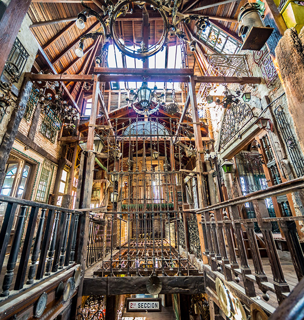
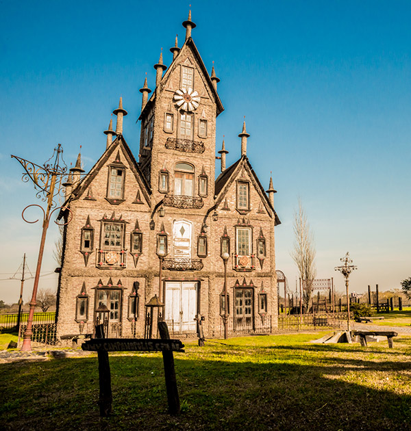
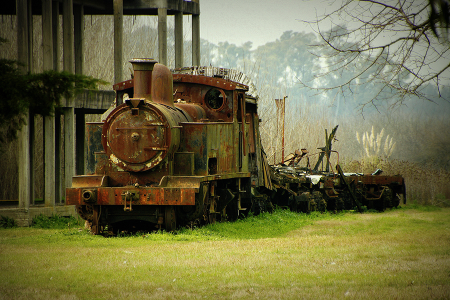
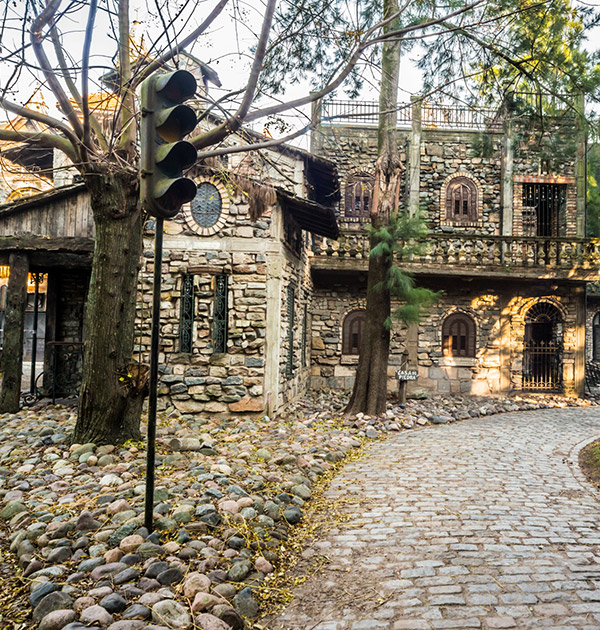
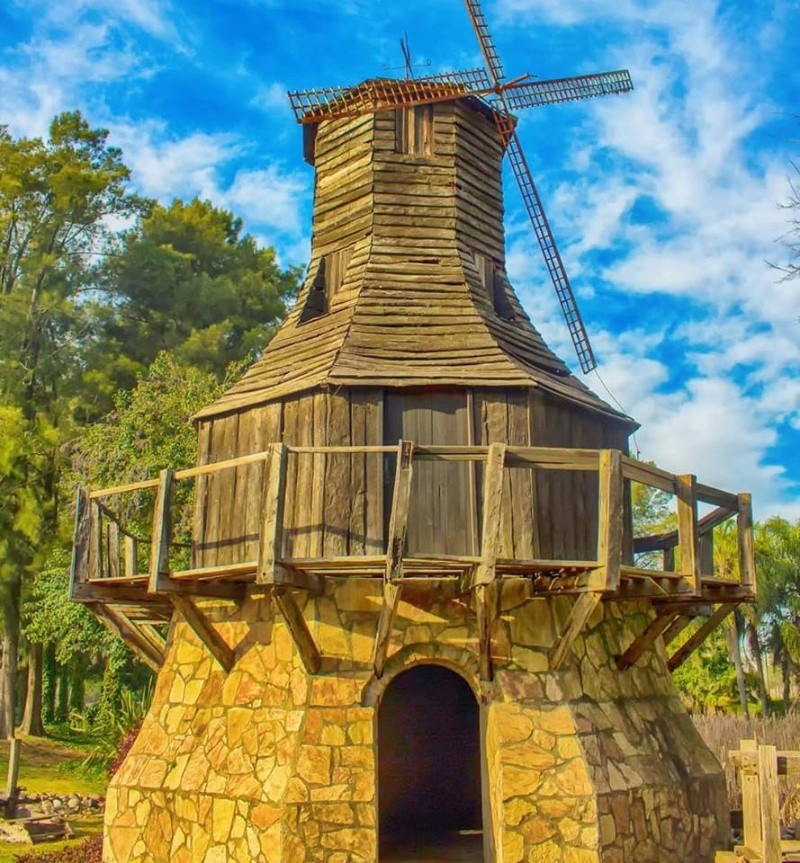
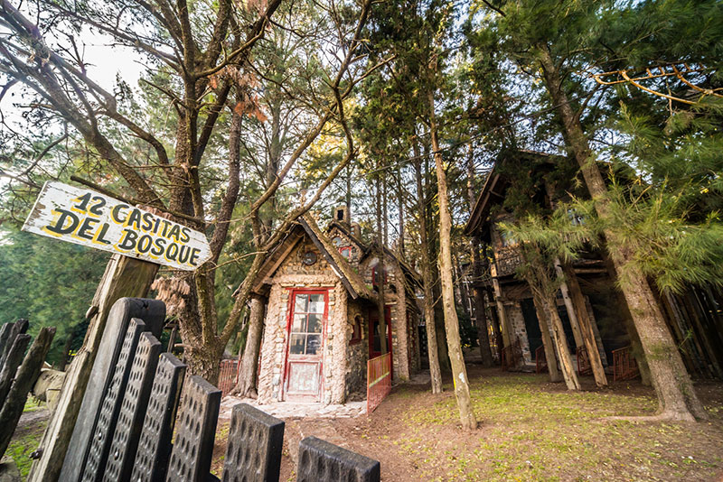

Campanópolis es un parque temático con construcciones, en su mayoría, con aspecto medieval y realizadas con materiales reciclados que está ubicado en González Catán, a unos 40 kilómetros de Buenos Aires (cerca de Ezeiza).
La aldea con espíritu medieval fue soñada, proyectada y construida por Don Antonio Campana, un argentino hijo de inmigrantes italianos que sin poseer estudios de arquitectura concreta su sueño, en un predio de 200 hectáreas con llanuras, bosques selváticos, ríos, arroyos, lagos. Don Antonio comenzó su proyecto cuando le diagnosticaron un cáncer terminal, para disfrutarlo con su familia y sus amigos, y dicen que la construcción le alargó la vida por más de 20 años.
El parque se despliega en un predio de 200 hectáreas y tiene dos partes diferenciadas: la aldea con 12 casitas del bosque y Villanueva, la zona más alejada y surrealista. En la aldea, además de las casitas, hay calles adoquinadas, recovecos y puntos secretos. A lo largo del recorrido se pueden ver fuentes, lagos, puentes, pasajes, un cabildo, un molino de viento, una capilla y hasta una locomotora. También hay varios museos -el de las Rejas, el de Madera y el de los Caireles- y casas para agendar, como la Casa de Piedra o la Casa Proa de Barco.
Todo está hecho con piezas recicladas: para construir la aldea que soñó, Campana usó sobrantes de demoliciones y consiguió material y objetos en remates, ferias y locales de antigüedades. Así, les dio nueva vida a maderas, rieles, vitrales, herrajes y más, logrando un estilo ecléctico.
Aca e dejamos una serie de lugares a los que te recomendamos ir en tu primer visita a Campanópolis.






Para más información, te recomendamos visitar la página oficial de Campanópolis. Allí podrás contactarte con personal que te facilite el viaje hasta allá mediante alguna empresa de turismo de tu preferencia.
De igual forma, te dejamos algunos datos importantes para que tengas en cuenta